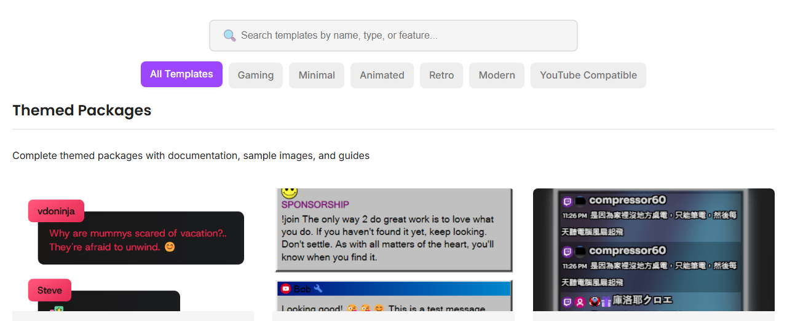
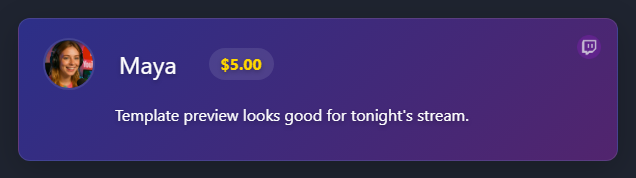

Fastest Path: Pick A Template
Templates are the easiest way to get a polished overlay without writing CSS from scratch.

Customization Levels
| Level | Use For | Where |
|---|---|---|
| Template controls | Quick visual changes. | Templates Gallery. |
| URL parameters | Behavior, labels, filters, scale, limits. | Overlay URL query string. |
| OBS Custom CSS | Small style overrides for one OBS source. | OBS Browser Source properties. |
| Hosted/self-hosted CSS | Reusable styles across overlays. | &css= or &b64css=. |
| Custom overlay | Fully custom behavior. | Custom overlays guide. |
Common URL Options
featured.html?session=YOUR_SESSION&scale=1.1&limit=10
sessionconnects the overlay to the right chat room.scalechanges size without rewriting CSS.limitcontrols how many messages stay visible on supported pages.hidesourcehides platform source labels in the Dock (dock.htmlonly).cssandb64cssload custom styling.
Preview Before OBS

Common Fixes
- Looks right in browser, wrong in OBS: remove OBS Custom CSS and refresh the browser source.
- Font missing: use a direct HTTPS font file and check CORS/hotlink rules.
- Everything is invisible: check opacity, color, filters, and whether the page needs a featured/event payload.
- URL changes do nothing: refresh the OBS source or replace the URL.